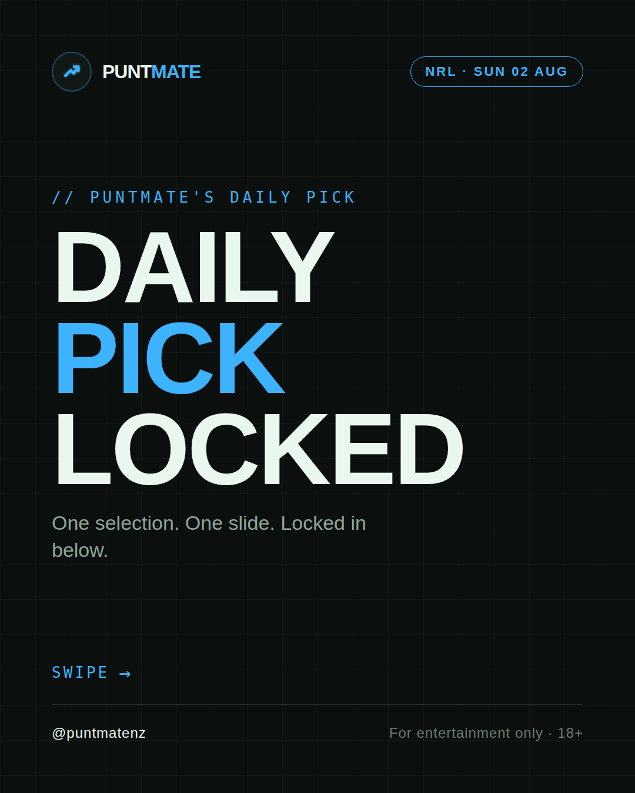
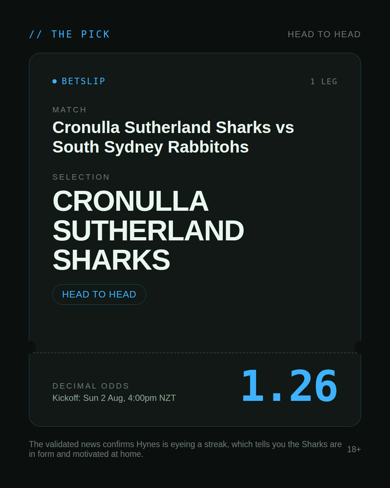
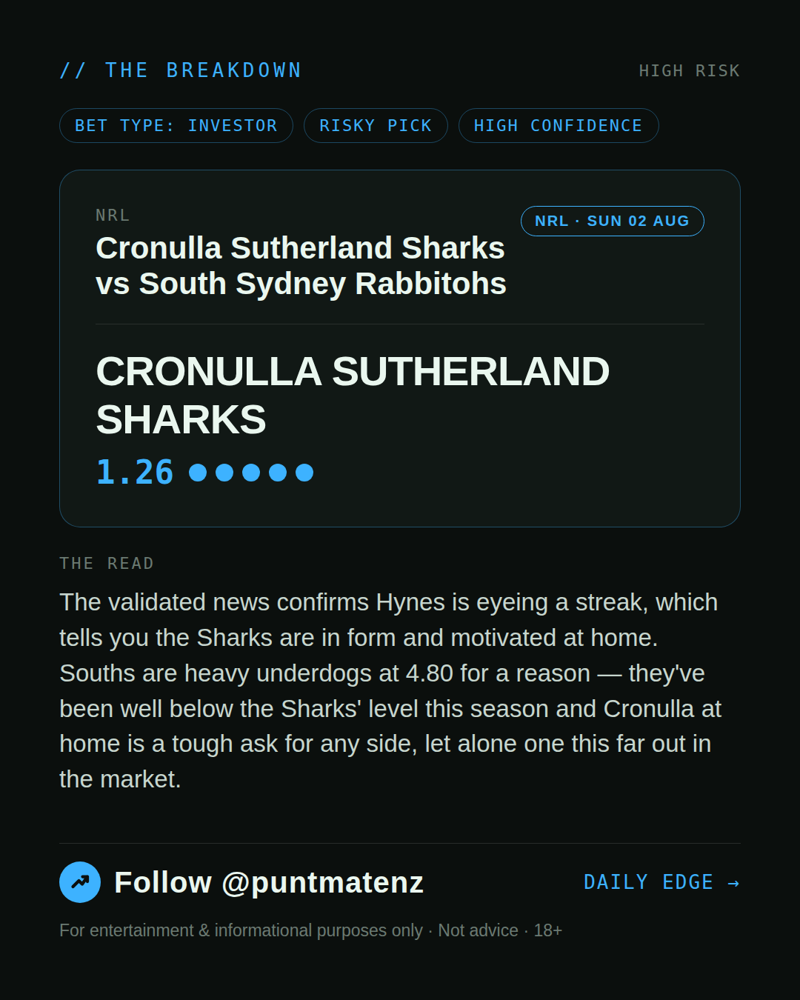
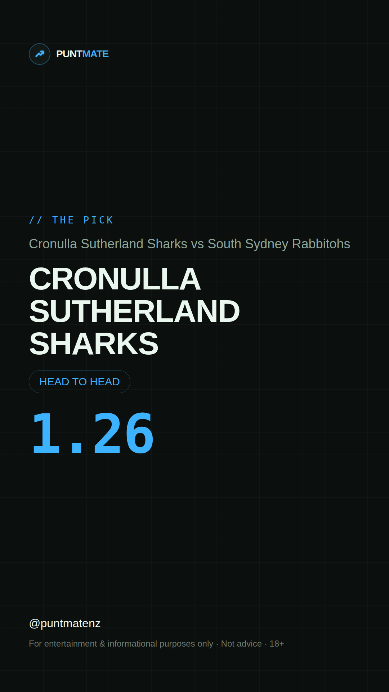

*🎯 PUNTMATE NZ — NRL* 🏟 Cronulla Sutherland Sharks vs South Sydney Rabbitohs *PICK:* CRONULLA SUTHERLAND SHARKS *ODDS:* 1.26 (Head to Head) *BET TYPE: INVESTOR* _The validated news confirms Hynes is eyeing a streak, which tells you the Sharks are in form and motivated at home. Souths are heavy underdogs at 4.80 for a reason — they've been well below the Sharks' level this season and Cronulla at home is a tough ask for any side, let alone one this far out in the market._ ────────────────── 📲 Join Telegram for daily picks ⚠️ For entertainment & informational purposes only. Not advice. 18+.
🎯 NRL — Cronulla Sutherland Sharks vs South Sydney Rabbitohs CRONULLA SUTHERLAND SHARKS @ 1.26 (Head to Head) BET TYPE: INVESTOR This one's about as close to a sure thing as sport gets — the numbers stack up and the price still pays. The validated news confirms Hynes is eyeing a streak, which tells you the Sharks are in form and motivated at home. Souths are heavy underdogs at 4.80 for a reason — they've been well below the Sharks' level this season and Cronulla at home is a tough ask for any side, let alone one this far out in the market. Follow for daily value picks → @puntmatenz ⚠️ For entertainment & informational purposes only. Not advice. 18+. #PuntmateNZ #SportsBetting #NZTAB #NRL
| has_pick | True |
| pick_id | 2026-08-01_Cronulla_Sutherland_Sharks_vs_South_Sydney_Rabbitohs |
| run_id | 30718214065 |
| generated_at | 2026-08-01T21:04:35.441845+00:00 |
| post_date | 2026-08-01 |
| match | Cronulla Sutherland Sharks vs South Sydney Rabbitohs |
| sport | rugbyleague_nrl |
| sport_label | NRL |
| market | Head to Head |
| selection | CRONULLA SUTHERLAND SHARKS |
| odds | 1.26 |
| bet_type | INVESTOR_BET |
| bet_type_label | BET TYPE: INVESTOR |
| bet_type_reason | This one's about as close to a sure thing as sport gets — the numbers stack up and the price still pays. The validated news confirms Hynes is eyeing a streak, which tells you the Sharks are in form and motivated at home. Souths are heavy underdogs at 4.80 for a reason — they've been well below the Sharks' level this season and Cronulla at home is a tough ask for any side, let alone one this far out in the market. |
| classification | RISKY_PICK |
| risk | RISKY_PICK |
| confidence | HIGH |
| confidence_label | HIGH |
| final_explanation | The validated news confirms Hynes is eyeing a streak, which tells you the Sharks are in form and motivated at home. Souths are heavy underdogs at 4.80 for a reason — they've been well below the Sharks' level this season and Cronulla at home is a tough ask for any side, let alone one this far out in the market. |
| public_caution | Keep this one light — the value's there but so is the uncertainty. |
| theme | night |
| carousel_paths | ['data/review/2026-08-01_Cronulla_Sutherland_Sharks_vs_South_Sydney_Rabbitohs/cover.png', 'data/review/2026-08-01_Cronulla_Sutherland_Sharks_vs_South_Sydney_Rabbitohs/tip.png', 'data/review/2026-08-01_Cronulla_Sutherland_Sharks_vs_South_Sydney_Rabbitohs/breakdown.png'] |
| carousel_urls | ['https://raw.githubusercontent.com/kingofthecastle24/puntmate/main/data/cards/2026-08-01_Cronulla_Sutherland_Sharks_vs_South_Sydney_Rabbitohs_night_1_cover.png', 'https://raw.githubusercontent.com/kingofthecastle24/puntmate/main/data/cards/2026-08-01_Cronulla_Sutherland_Sharks_vs_South_Sydney_Rabbitohs_night_2_tip.png', 'https://raw.githubusercontent.com/kingofthecastle24/puntmate/main/data/cards/2026-08-01_Cronulla_Sutherland_Sharks_vs_South_Sydney_Rabbitohs_night_3_breakdown.png'] |
| story_path | data/review/2026-08-01_Cronulla_Sutherland_Sharks_vs_South_Sydney_Rabbitohs/story.png |
| story_url | https://raw.githubusercontent.com/kingofthecastle24/puntmate/main/data/cards/2026-08-01_Cronulla_Sutherland_Sharks_vs_South_Sydney_Rabbitohs_night_story.png |
| intended_platforms | ['telegram', 'instagram_feed', 'instagram_story', 'facebook'] |
| workflow_state | GENERATED |
| has_punter_multi | False |
| has_gambler_multi | False |
| has_degenerate_multi | False |